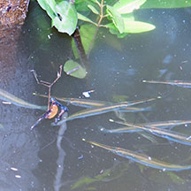
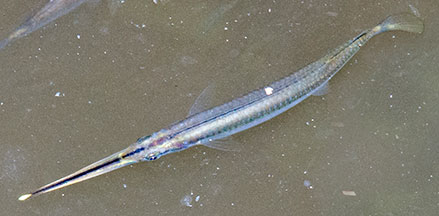

|
|
| fishes text index | photo index |
| Phylum Chordata > Subphylum Vertebrate > fishes > halfbeaks |
| Stripe-nosed
halfbeak Zenarchopterus buffonis Family Zenarchopteridae updated Sep 2020 Where seen? This stick-like fish with a luminous tip at the end of the long pointed lower jaw is almost always seen under the main bridge at Sungei Buloh Wetland Reserve, floating at the water surface. Usually in groups of many individuals. Features: To about 23cm long. Body long, cylindrica silvery. Lower jaw elongated with a narrow sharp point. The tip is bright white that seems to glow in the water. It has a prominent dark line along the centre of the lower jaw so it does appear to have a stripe on its 'nose'. Upper jaw very short. Tail fin is not forked. |
 Sungei Buloh, Feb 11 |
 Pasir Ris, Feb 12 |
| What does it eat? It seems to feed mainly on insects that have fallen into the water. Which is probably why this fish 'hangs around' in small groups under mangrove vegetation. |
| Stripe-nosed halfbeaks on Singapore shores |
On wildsingapore
flickr
|
|
Links
References
|